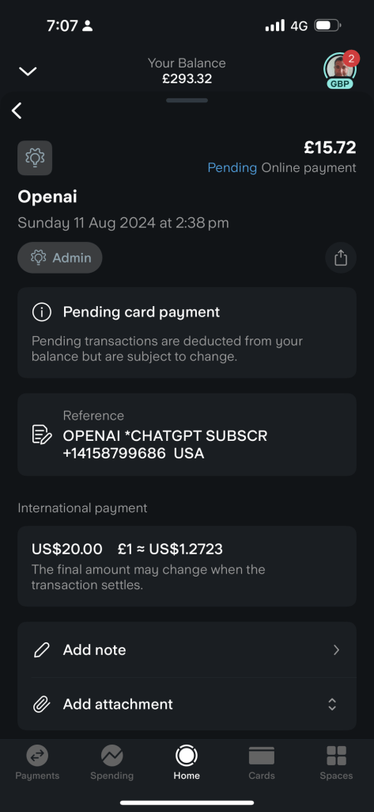

Enhancing Performance: Should You Replace Your Azure Logic App with Direct OpenAI API Calls?

When building applications that integrate with various services, developers often rely on Azure Logic Apps to orchestrate workflows. Azure Logic Apps provide a powerful platform for managing complex workflows, integrating various services, and automating tasks without needing to write extensive code. However, when it comes to performance, especially in scenarios involving AI-powered APIs like OpenAI's GPT models, it's crucial to evaluate whether using a Logic App is the most efficient approach.
In this blog post, we’ll explore the cost and performance implications of using Azure Logic Apps versus making direct OpenAI API calls, particularly when dealing with time-sensitive operations.
Understanding the Cost and Latency
Let’s begin by breaking down the costs and potential delays associated with both approaches:
Azure Logic Apps
Azure Logic Apps are billed based on the number of actions taken within a workflow. Each action or connector used incurs a small cost, and the execution time can vary depending on the complexity of the workflow.
-
Cost: Azure Logic Apps typically cost around $0.000025 per action. A simple workflow involving 3 actions might cost approximately $0.000075 per execution.
-
Latency: Depending on the actions involved, a Logic App might take several seconds to trigger, execute, and complete. In the scenario we're considering, this could be around 30 seconds.
OpenAI API Calls
The cost of using OpenAI's GPT models depends on the number of tokens processed during the API call. This cost is consistent regardless of how the API is triggered.
-
Cost: For GPT-3.5 Turbo, the cost is approximately $0.0015 per 1,000 tokens. A call involving 3,000 tokens would cost about $0.0045.
-
Latency: Direct API calls are generally faster, with response times typically under a second, assuming optimal network conditions.
Comparison Table
Below is a table that summarizes the differences in cost and performance between using Azure Logic Apps and direct OpenAI API calls.FactorAzure Logic AppDirect OpenAI API CallCost ~$0.000075 per execution (3 actions) ~$0.0045 per 3,000 tokens Latency ~30 seconds < 1 second Complexity Suitable for complex workflows with multiple actions Best for simple, direct API integrations Scalability Highly scalable, managed by Azure Scalable, but requires custom management Use Case Ideal for complex workflows or multi-step processes Ideal for time-sensitive, single API calls
When to Use Each Approach
When to Stick with Azure Logic Apps:
-
Complex Workflows: If your application requires integrating multiple services, handling complex workflows, or managing retry logic, Azure Logic Apps provide a robust platform with built-in connectors and triggers.
-
Event-Driven Scenarios: Logic Apps are particularly useful for automating workflows triggered by events or scheduled intervals.
When to Consider Direct API Calls:
-
Performance-Critical Applications: If your application demands minimal latency, especially when calling the OpenAI API, a direct API call is far more efficient. Reducing a 30-second delay to under 1 second can significantly enhance the user experience.
-
Cost Efficiency: While the cost of Azure Logic Apps is minimal, it adds up when executing numerous workflows. Direct API calls eliminate this additional overhead.
Conclusion: Direct API Calls for Speed, Logic Apps for Complexity
The decision between using Azure Logic Apps or making direct OpenAI API calls hinges on your specific use case. For performance-critical applications where every second counts, bypassing the Logic App and directly integrating the OpenAI API call can reduce latency and simplify your architecture. On the other hand, if you need to manage complex workflows, Azure Logic Apps provide a valuable toolset for orchestrating those processes with minimal code.
Ultimately, understanding the trade-offs between cost, latency, and complexity will help you choose the right approach for your project. Whether optimizing for speed or managing intricate workflows, both Azure Logic Apps and direct API calls offer powerful solutions tailored to your needs.
By carefully considering the factors above, you can ensure that your application delivers the best possible performance while remaining cost-effective.
Imported from rifaterdemsahin.com · 2024